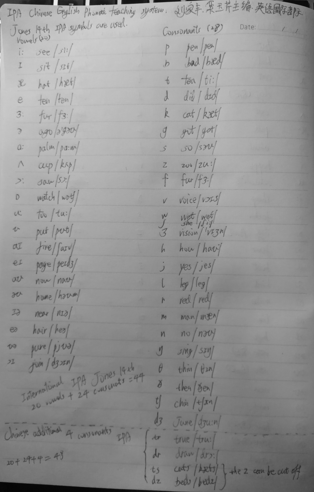

<!DOCTYPE html>
<html lang="English">
<head>
    <meta charset="UTF-8">
<meta name="viewport"
      content="width=device-width, initial-scale=1.0, maximum-scale=1.0, minimum-scale=1.0">
<meta http-equiv="X-UA-Compatible" content="ie=edge">

    <meta name="author" content="DocNan">


<title>International Phonetic Alphabet | Hexo</title>


    <link rel="icon" href="../../../../ink_bamboo_1kB.ico">


    <!-- stylesheets list from _config.yml -->
    
    <link rel="stylesheet" href="../../../../css/style.css">
    


    <!-- scripts list from _config.yml -->
    
    <script src="../../../../js/script.js"></script>
    
    <script src="../../../../js/tocbot.min.js"></script>
    


    
    
        <!-- MathJax配置，可通过单美元符号书写行内公式等 -->
<script type="text/x-mathjax-config">
    MathJax.Hub.Config({
    "HTML-CSS": {
        preferredFont: "TeX",
        availableFonts: ["STIX","TeX"],
        linebreaks: { automatic:true },
        EqnChunk: (MathJax.Hub.Browser.isMobile ? 10 : 50)
    },
    tex2jax: {
        inlineMath: [ ["$", "$"], ["\\(","\\)"] ],
        processEscapes: true,
        ignoreClass: "tex2jax_ignore|dno",
        skipTags: ['script', 'noscript', 'style', 'textarea', 'pre', 'code']
    },
    TeX: {
        equationNumbers: { autoNumber: "AMS" },
        noUndefined: { attributes: { mathcolor: "red", mathbackground: "#FFEEEE", mathsize: "90%" } },
        Macros: { href: "{}" }
    },
    messageStyle: "none"
    });
</script>
<!-- 给MathJax元素添加has-jax class -->
<script type="text/x-mathjax-config">
    MathJax.Hub.Queue(function() {
        var all = MathJax.Hub.getAllJax(), i;
        for(i=0; i < all.length; i += 1) {
            all[i].SourceElement().parentNode.className += ' has-jax';
        }
    });
</script>
<!-- 通过连接CDN加载MathJax的js代码 -->
<script type="text/javascript" async
        src="https://cdnjs.cloudflare.com/ajax/libs/mathjax/2.7.5/MathJax.js?config=TeX-MML-AM_CHTML">
</script>


    


</head>
<body>
    <div class="wrapper">
        <header>
    <nav class="navbar">
        <div class="container">
            <div class="navbar-header header-logo"><a href="/">Blog of DocNan</a></div>
            <div class="menu navbar-right">
                
                    <a class="menu-item" href="../../../../archives">Posts</a>
                
                    <a class="menu-item" href="../../../../Publications">Publications</a>
                
                    <a class="menu-item" href="../../../../category">Categories</a>
                
                    <a class="menu-item" href="../../../../tag">Tags</a>
                
                    <a class="menu-item" href="../../../../about">About</a>
                
                <input id="switch_default" type="checkbox" class="switch_default">
                <label for="switch_default" class="toggleBtn"></label>
            </div>
        </div>
    </nav>

    
    <nav class="navbar-mobile" id="nav-mobile">
        <div class="container">
            <div class="navbar-header">
                <div>
                    <a href="/">Blog of DocNan</a><a id="mobile-toggle-theme">·&nbsp;Light</a>
                </div>
                <div class="menu-toggle" onclick="mobileBtn()">&#9776; Menu</div>
            </div>
            <div class="menu" id="mobile-menu">
                
                    <a class="menu-item" href="../../../../archives">Posts</a>
                
                    <a class="menu-item" href="../../../../Publications">Publications</a>
                
                    <a class="menu-item" href="../../../../category">Categories</a>
                
                    <a class="menu-item" href="../../../../tag">Tags</a>
                
                    <a class="menu-item" href="../../../../about">About</a>
                
            </div>
        </div>
    </nav>

</header>
<script>
    var mobileBtn = function f() {
        var toggleMenu = document.getElementsByClassName("menu-toggle")[0];
        var mobileMenu = document.getElementById("mobile-menu");
        if(toggleMenu.classList.contains("active")){
           toggleMenu.classList.remove("active")
            mobileMenu.classList.remove("active")
        }else{
            toggleMenu.classList.add("active")
            mobileMenu.classList.add("active")
        }
    }
</script>
        <div class="main">
            <div class="container">
    
    
        <div class="post-toc">
    <div class="tocbot-list">
    </div>
    <div class="tocbot-list-menu">
        <a class="tocbot-toc-expand" onclick="expand_toc()">Expand all</a>
        <a onclick="go_top()">Back to top</a>
        <a onclick="go_bottom()">Go to bottom</a>
    </div>
</div>

<script>
    document.ready(
        function () {
            tocbot.init({
                tocSelector: '.tocbot-list',
                contentSelector: '.post-content',
                headingSelector: 'h1, h2, h3, h4, h5',
                collapseDepth: 1,
                orderedList: false,
                scrollSmooth: true,
            })
        }
    )

    function expand_toc() {
        var b = document.querySelector(".tocbot-toc-expand");
        tocbot.init({
            tocSelector: '.tocbot-list',
            contentSelector: '.post-content',
            headingSelector: 'h1, h2, h3, h4, h5',
            collapseDepth: 6,
            orderedList: false,
            scrollSmooth: true,
        });
        b.setAttribute("onclick", "collapse_toc()");
        b.innerHTML = "Collapse all"
    }

    function collapse_toc() {
        var b = document.querySelector(".tocbot-toc-expand");
        tocbot.init({
            tocSelector: '.tocbot-list',
            contentSelector: '.post-content',
            headingSelector: 'h1, h2, h3, h4, h5',
            collapseDepth: 1,
            orderedList: false,
            scrollSmooth: true,
        });
        b.setAttribute("onclick", "expand_toc()");
        b.innerHTML = "Expand all"
    }

    function go_top() {
        window.scrollTo(0, 0);
    }

    function go_bottom() {
        window.scrollTo(0, document.body.scrollHeight);
    }

</script>
    

    
    <article class="post-wrap">
        <header class="post-header">
            <h1 class="post-title">International Phonetic Alphabet</h1>
            
                <div class="post-meta">
                    
                        Author: <a itemprop="author" rel="author" href="/">DocNan</a>
                    

                    
                        <span class="post-time">
                        Date: <a href="#">February 7, 2019&nbsp;&nbsp;20:49:30</a>
                        </span>
                    
                    
                        <span class="post-category">
                    Category:
                            
                                <a href="../../../../Publications/Language/">Language</a>
                            
                        </span>
                    
                </div>
            
        </header>

        <div class="post-content">
            <p>The International Phonetic Alphabet (IPA) is the basis for the learning of English. Only by mastering it will you be able to pronounce correctly for the unknown words.</p>
<h1 id="history-of-ipa"><a class="markdownIt-Anchor" href="#history-of-ipa"></a> History of IPA</h1>
<p>However, there are several systems of IPA symbols as well as pronunciation rules. In the Chinese English teaching system, there are 48 syllables with 20 vowels and 28 consonants [1]. While in the most recent English dictionary, eg. Longman Dictionary of Contemporary English, as well as Oxford English Dictionary, there are only 44 syllables with 20 vowels and 24 consonants [2]. Besides that, there are two systems of English IPA symbols. One is Jones’ version, the other is the K.K version. In the old English dictionaries and text books, Jones’ 13 th version is used. For the new versions of dictionaries and text books, Jones’ 14 th version is often used.</p>
<h1 id="ipa-versions"><a class="markdownIt-Anchor" href="#ipa-versions"></a> IPA versions</h1>
<h2 id="chinese-english-ipa-version-48-20-28"><a class="markdownIt-Anchor" href="#chinese-english-ipa-version-48-20-28"></a> Chinese English IPA version (48 = 20 + 28)</h2>
<p>In the Chinese version of English phonetic alphabet teaching, there are 48 = 20 vowels + 28 consonants.</p>
<h2 id="international-english-ipa-version-44-20-24"><a class="markdownIt-Anchor" href="#international-english-ipa-version-44-20-24"></a> International English IPA version (44 = 20+ 24)</h2>
<p>While in the International English phonetic alphabet teaching, (Oxford dic), there are 44 = 20 vowels + 24 consonants.</p>
<h1 id="my-suggestion"><a class="markdownIt-Anchor" href="#my-suggestion"></a> My suggestion</h1>
<p>In my opinion, the Chinese English teaching system with 48 syllables in Jones’ 14th version is the best learning choice. Because most new text books and dictionaries use Jones’ 14th IPA version. The complete 48 syllables in Chinese teaching method enables most students to pronounce any unknown word correctly.</p>
<p></p>
<h1 id="reference"><a class="markdownIt-Anchor" href="#reference"></a> Reference</h1>
<p>[1] 英语国际音标，刘家丰，栾玉芹，方圆电子音像出版社, 2001.</p>
<p>[2] Oxford intemediate learner’s dictionary (En/Ch), 1998 version. The commercial press and Oxford university press.</p>

        </div>

        
            <section class="post-copyright">
                
                    <p class="copyright-item">
                        <span>Author:</span>
                        <span>DocNan</span>
                    </p>
                
                
                    <p class="copyright-item">
                        <span>Permalink:</span>
                        <span><a href="https://docnan.github.io/2019/02/07/International-Phonetic-Alphabet/">https://docnan.github.io/2019/02/07/International-Phonetic-Alphabet/</a></span>
                    </p>
                
                
                    <p class="copyright-item">
                        <span>License:</span>
                        <span>Copyright (c) 2019 <a href="http://creativecommons.org/licenses/by-nc/4.0/" target="_blank" rel="noopener">CC-BY-NC-4.0</a> LICENSE</span>
                    </p>
                
                
                     <p class="copyright-item">
                         <span>Slogan:</span>
                         <span>我们的梦想是星辰大海！</span>
                     </p>
                

            </section>
        
        <section class="post-tags">
            <div>
                <span>Tag(s):</span>
                <span class="tag">
                    
                    
                        <a href="../../../../tags/Language/"># Language</a>
                    
                        
                </span>
            </div>
            <div>
                <a href="javascript:window.history.back();" target="_blank" rel="noopener">back</a>
                <span>· </span>
                <a href="/">home</a>
            </div>
        </section>
        <section class="post-nav">
            
                <a class="prev" rel="prev" href="../../12/Quantum-Energy-Spectrums/">Quantum Energy Spectrums</a>
            
            
            <a class="next" rel="next" href="../../06/Balance-of-scale/">Balance of scale</a>
            
        </section>


    </article>
</div>

        </div>
        <footer id="footer" class="footer">
    <div class="copyright">
        <span>© DocNan | Powered by <a href="https://hexo.io" target="_blank">Hexo</a> & <a href="https://github.com/Siricee/hexo-theme-Chic" target="_blank">Chic</a></span>
    </div>
</footer>

    </div>
</body>
</html>
